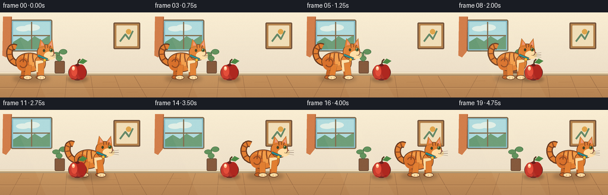
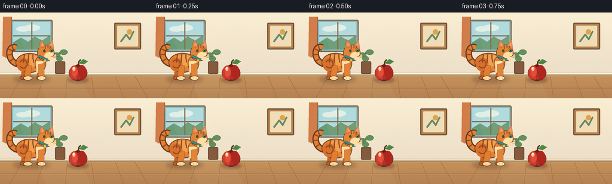

CODING AGENTS AS PIXEL WORLD MODELS
traex/GPT-5.6-Sol · instance_preservation_0006
点击播放 · 原生 RGB 像素
逐轮保存的候选
回放视频、检查图与代码变化。
每份候选均可单独播放。实际图片检查记录在下方工具轨迹中。
候选 01播放与检查图
点击播放 · 原生 RGB 像素


展开代码变化
--- 上一保存版本
+++ 本次保存版本
@@ -0,0 +1,241 @@
+from pathlib import Path
+import math
+import numpy as np
+from PIL import Image, ImageDraw, ImageFilter
+import artifact_io
+
+W, H, N = 256, 144, 20
+S = 4
+rng = np.random.default_rng(8)
+
+
+def B(box):
+ return tuple(int(round(v*S)) for v in box)
+
+def P(points):
+ return [(int(round(x*S)), int(round(y*S))) for x,y in points]
+
+def bezier(p0,p1,p2,p3,n=32):
+ out=[]
+ for t in np.linspace(0,1,n):
+ q=1-t
+ out.append((q**3*p0[0]+3*q*q*t*p1[0]+3*q*t*t*p2[0]+t**3*p3[0],
+ q**3*p0[1]+3*q*q*t*p1[1]+3*q*t*t*p2[1]+t**3*p3[1]))
+ return out
+
+def line(draw, points, fill, width, joint='curve'):
+ draw.line(P(points), fill=fill, width=max(1,int(width*S)), joint=joint)
+
+def ellipse(draw, box, fill, outline=None, width=1):
+ draw.ellipse(B(box), fill=fill, outline=outline, width=max(1,int(width*S)))
+
+def polygon(draw, points, fill, outline=None):
+ draw.polygon(P(points), fill=fill, outline=outline)
+
+def rounded(draw, box, radius, fill, outline=None, width=1):
+ draw.rounded_rectangle(B(box), radius=int(radius*S), fill=fill, outline=outline, width=max(1,int(width*S)))
+
+
+def make_background():
+ im=Image.new('RGB',(W*S,H*S),(244,229,197))
+ d=ImageDraw.Draw(im)
+ # softly graded plaster wall
+ for y in range(0,105*S):
+ yy=y/S
+ t=yy/105
+ col=(int(250-13*t),int(238-15*t),int(211-10*t))
+ d.line([(0,y),(W*S,y)],fill=col)
+ # framed sunlit window and distant sky
+ rounded(d,(18,12,88,66),3,(134,187,199),(126,104,75),2)
+ rounded(d,(22,16,84,62),1,(173,218,222))
+ # hazy clouds
+ ellipse(d,(27,23,50,32),(224,239,232)); ellipse(d,(40,20,67,31),(224,239,232))
+ # distant greenery
+ polygon(d,[(22,50),(35,42),(47,49),(58,40),(70,47),(84,38),(84,62),(22,62)],(105,155,118))
+ line(d,[(53,16),(53,62)],(126,104,75),2)
+ line(d,[(22,39),(84,39)],(126,104,75),2)
+ # warm curtain edges
+ polygon(d,[(5,7),(20,7),(18,66),(10,76),(4,73)],(210,126,75))
+ line(d,[(19,8),(18,65)],(158,89,57),1.2)
+ # framed minimalist picture at right
+ rounded(d,(191,17,236,62),2,(181,131,77),(114,82,58),2)
+ rounded(d,(196,22,231,57),1,(241,222,184))
+ line(d,[(202,49),(211,37),(217,45),(224,31)],(102,137,104),3)
+ ellipse(d,(212,28,221,37),(224,165,75))
+ # baseboard
+ d.rectangle(B((0,101,256,107)),fill=(202,178,138))
+ line(d,[(0,102),(256,102)],(255,244,220),1.5)
+ line(d,[(0,106),(256,106)],(151,125,93),1)
+ # wooden floor gradient
+ for y in range(107*S,H*S):
+ t=(y/S-107)/37
+ col=(int(198-18*t),int(145-15*t),int(91-8*t))
+ d.line([(0,y),(W*S,y)],fill=col)
+ # floorboard perspective and grain
+ for x in [16,61,109,158,207,247]:
+ line(d,[(128+(x-128)*.82,107),(x,144)],(143,99,64),.7)
+ line(d,[(0,127),(256,127)],(151,103,66),.8)
+ line(d,[(0,128),(256,128)],(222,170,110),.5)
+ for x,y,l in [(29,116,20),(79,137,28),(173,118,22),(213,135,19),(119,131,13)]:
+ line(d,[(x,y),(x+l,y-.6)],(167,116,72),.6)
+ # plant near window, kept subtle
+ rounded(d,(92,82,109,103),2,(128,82,54),(91,61,45),1)
+ line(d,[(100,83),(100,66)],(77,116,76),2)
+ for box in [(88,67,101,75),(100,62,113,71),(94,73,105,82)]:
+ ellipse(d,box,(91,142,88),(65,104,67),.6)
+ # Fixed fine texture for a tactile illustrated look
+ arr=np.asarray(im).astype(np.int16)
+ noise=rng.normal(0,0.7,arr.shape[:2])[:,:,None]
+ arr=np.clip(arr+noise,0,255).astype(np.uint8)
+ return Image.fromarray(arr,'RGB')
+
+BG=make_background()
+
+
+def draw_shadow(base, x, strength=65):
+ layer=Image.new('RGBA',base.size,(0,0,0,0)); ld=ImageDraw.Draw(layer)
+ ld.ellipse(B((x-31,106,x+31,118)),fill=(64,43,30,strength))
+ layer=layer.filter(ImageFilter.GaussianBlur(3.0*S))
+ base.alpha_composite(layer)
+
+
+def draw_cat(base, x, frame, moving):
+ # Same identifying silhouette, collar, face, markings in every frame.
+ phase=(frame-4)*1.17 if moving else frame*.22
+ bob=(1.25*abs(math.sin(phase))) if moving else .35*math.sin(frame*.7)
+ yoff=-bob
+ d=ImageDraw.Draw(base)
+ outline=(103,57,32,255)
+ dark=(143,73,34,255)
+ orange=(225,126,49,255)
+ light=(242,156,72,255)
+ cream=(255,221,164,255)
+ # tail behind body: characteristic high question-mark curl
+ sway=2.0*math.sin(phase*.6)
+ tail=bezier((x-22,87+yoff),(x-43,83+yoff),(x-40+sway,52+yoff),(x-26+sway,59+yoff),36)
+ line(d,tail,outline,11)
+ line(d,tail,orange,7.2)
+ # tail stripes
+ for u in [.28,.47,.66,.83]:
+ i=int(u*(len(tail)-1)); px,py=tail[i]
+ if i+1<len(tail):
+ nx,ny=tail[min(i+1,len(tail)-1)]; vx,vy=nx-px,ny-py
+ ln=max(.01,math.hypot(vx,vy)); rx,ry=-vy/ln*4.0,vx/ln*4.0
+ line(d,[(px-rx,py-ry),(px+rx,py+ry)],dark,2.1)
+ # far legs, darker for depth
+ swing=math.sin(phase)*6 if moving else 0
+ swing2=-swing
+ polygon(d,[(x-16,88+yoff),(x-7,89+yoff),(x-9+swing2*.45,109),(x-18+swing2*.35,109)],(197,100,38,255),outline)
+ ellipse(d,(x-20+swing2*.35,106,x-7+swing2*.45,113),(194,96,36,255),outline,1)
+ polygon(d,[(x+8,86+yoff),(x+17,85+yoff),(x+18+swing*.45,109),(x+9+swing*.35,109)],(196,98,36,255),outline)
+ ellipse(d,(x+7+swing*.35,106,x+21+swing*.45,113),(194,96,36,255),outline,1)
+ # torso with layered highlight; low-slung, unmistakably feline
+ ellipse(d,(x-27,68+yoff,x+20,101+yoff),orange,outline,1.3)
+ ellipse(d,(x-19,71+yoff,x+14,91+yoff),light,None)
+ ellipse(d,(x-25,76+yoff,x-4,99+yoff),(216,112,43,255),None)
+ # shoulder/chest gives an integral connection to head and legs
+ ellipse(d,(x+5,73+yoff,x+24,99+yoff),orange,outline,1)
+ polygon(d,[(x+7,82+yoff),(x+20,81+yoff),(x+17,101+yoff),(x+8,101+yoff)],cream,None)
+ # near legs, animated gait
+ rs=math.sin(phase+math.pi)*6 if moving else 0
+ fs=math.sin(phase)*6 if moving else 0
+ polygon(d,[(x-10,89+yoff),(x,89+yoff),(x-2+rs*.5,109),(x-12+rs*.48,109)],orange,outline)
+ ellipse(d,(x-14+rs*.48,106,x+1+rs*.5,114),cream,outline,1)
+ polygon(d,[(x+11,87+yoff),(x+21,85+yoff),(x+21+fs*.50,109),(x+11+fs*.42,109)],orange,outline)
+ ellipse(d,(x+9+fs*.42,106,x+24+fs*.50,114),cream,outline,1)
+ # subtle toes
+ for px in [x-8+rs*.48,x-3+rs*.48,x+15+fs*.45,x+20+fs*.45]:
+ line(d,[(px,109.5),(px,112)],(177,91,42,255),.55)
+ # body tabby markings, anchored to the same cat
+ for dx, tilt in [(-12,-2),(-5,-1),(2,1)]:
+ pts=bezier((x+dx,70+yoff),(x+dx-1,76+yoff),(x+dx+tilt,80+yoff),(x+dx+tilt,84+yoff),12)
+ line(d,pts,dark,2.2)
+ # flank swirl, persistent identifying marking
+ arcbox=B((x-21,79+yoff,x-7,94+yoff))
+ d.arc(arcbox,start=205,end=510,fill=dark,width=max(1,int(1.8*S)))
+ # neck and head
+ ellipse(d,(x+9,54+yoff,x+38,82+yoff),orange,outline,1.2)
+ # ears with dark rims and pink centers
+ polygon(d,[(x+12,60+yoff),(x+15,45+yoff),(x+24,57+yoff)],orange,outline)
+ polygon(d,[(x+27,56+yoff),(x+35,45+yoff),(x+37,63+yoff)],orange,outline)
+ polygon(d,[(x+16,56+yoff),(x+17,49+yoff),(x+21,56+yoff)],(238,151,120,255),None)
+ polygon(d,[(x+30,55+yoff),(x+34,49+yoff),(x+35,58+yoff)],(238,151,120,255),None)
+ # forehead stripes
+ line(d,[(x+22,55+yoff),(x+23,61+yoff)],dark,1.7)
+ line(d,[(x+27,54+yoff),(x+27,60+yoff)],dark,1.7)
+ line(d,[(x+32,56+yoff),(x+30,61+yoff)],dark,1.5)
+ # cheek and muzzle
+ ellipse(d,(x+21,66+yoff,x+41,80+yoff),cream,None)
+ # far eye and near eye in side profile, both retain emerald glint
+ ellipse(d,(x+19,62+yoff,x+23,67+yoff),(58,71,38,255),outline,.7)
+ ellipse(d,(x+30,61+yoff,x+36,67+yoff),(86,125,61,255),outline,.7)
+ ellipse(d,(x+32.7,62.5+yoff,x+34.2,65.7+yoff),(24,28,21,255))
+ ellipse(d,(x+31.8,62+yoff,x+33.0,63.2+yoff),(255,247,211,255))
+ # nose, smile, whiskers
+ polygon(d,[(x+40,69+yoff),(x+36.8,67.5+yoff),(x+37.1,71+yoff)],(154,77,73,255),outline)
+ line(d,[(x+37.5,71+yoff),(x+35,74+yoff),(x+32,73.5+yoff)],outline,.8)
+ for dy, endy in [(-1,-3),(1,1),(3,5)]:
+ line(d,[(x+36,72+dy+yoff),(x+48,72+endy+yoff)],(92,70,56,210),.55)
+ # signature teal collar and gold tag
+ line(d,[(x+11,73+yoff),(x+27,80+yoff)],outline,4.8)
+ line(d,[(x+11,72.7+yoff),(x+27,79.7+yoff)],(35,142,146,255),2.8)
+ ellipse(d,(x+19.5,78+yoff,x+24.8,83.4+yoff),(241,184,48,255),outline,.7)
+
+
+def draw_apple(base):
+ d=ImageDraw.Draw(base)
+ # compact stationary cast shadow
+ shadow=Image.new('RGBA',base.size,(0,0,0,0)); sd=ImageDraw.Draw(shadow)
+ sd.ellipse(B((113,108,148,118)),fill=(61,39,27,85))
+ shadow=shadow.filter(ImageFilter.GaussianBlur(2.2*S)); base.alpha_composite(shadow)
+ d=ImageDraw.Draw(base)
+ # stem and leaf are redrawn at identical pixel coordinates each frame
+ line(d,[(130,91),(132,82),(135,79)],(83,58,35,255),2.4)
+ leaf=[(132,85),(139,78),(147,82),(140,87)]
+ polygon(d,leaf,(78,139,69,255),(47,94,49,255))
+ line(d,[(133,85),(143,82)],(50,98,51,255),.7)
+ # rich red body assembled with contour and highlights
+ ellipse(d,(115,88,146,115),(129,35,30,255),(83,34,28,255),1.3)
+ ellipse(d,(116,89,132,114),(198,51,39,255),None)
+ ellipse(d,(127,88,145,114),(174,39,31,255),None)
+ ellipse(d,(120,91,130,108),(226,70,51,255),None)
+ ellipse(d,(121,91,126,98),(255,186,138,220),None)
+ ellipse(d,(122,92,125,95),(255,237,207,255),None)
+ # bottom contour and dimple
+ line(d,[(120,111),(129,114),(139,111)],(112,30,27,255),1)
+ ellipse(d,(127,87,134,91),(105,31,27,255),None)
+
+
+def cat_x(i):
+ if i <= 3:
+ return 53.0
+ if i >= 16:
+ return 194.0
+ t=(i-4)/11.0
+ # smooth start and stop, while clearly traversing the apple
+ s=t*t*(3-2*t)
+ return 53 + (194-53)*s
+
+
+def make_frame(i):
+ base=BG.convert('RGBA')
+ x=cat_x(i)
+ moving=4 <= i <= 15
+ draw_shadow(base,x)
+ draw_cat(base,x,i,moving)
+ # Apple stays perfectly fixed and passes in front during the brief crossing.
+ draw_apple(base)
+ # soft sunlight veil, constant across frames
+ light=Image.new('RGBA',base.size,(0,0,0,0)); ld=ImageDraw.Draw(light)
+ polygon(ld,[(21,16),(84,16),(152,144),(77,144)],(255,244,198,12),None)
+ base=Image.alpha_composite(base,light)
+ return np.asarray(base.convert('RGB').resize((W,H),Image.Resampling.LANCZOS),dtype=np.uint8)
+
+
+def main():
+ frames=np.stack([make_frame(i) for i in range(N)])
+ artifact_io.save(frames,Path(__file__).resolve().parent)
+ print('saved',frames.shape,frames.dtype,'x positions:',[round(cat_x(i),1) for i in range(N)])
+
+if __name__=='__main__':
+ main()
可观测工具轨迹
实际执行的命令与返回图片。
命令 1exit 0
/bin/bash -lc "cat prompt.txt && printf '\\n--- GENERATION_RULES.md ---\\n' && cat GENERATION_RULES.md && printf '\\n--- task_spec.json ---\\n' && cat task_spec.json"
命令 2exit 0
/bin/bash -lc "find . -maxdepth 3 -type f -printf '%p\\n' | sort && printf '\\n--- tools ---\\n' && command -v ffmpeg || true && command -v python3 || true && command -v blender || true && command -v convert || true"
命令 3exit 0
/bin/bash -lc 'cat artifact_io.py'
命令 4exit 0
/bin/bash -lc "cat > generate.py <<'PY'
from pathlib import Path
import math
import numpy as np
from PIL import Image, ImageDraw, ImageFilter
import artifact_io
W, H, N = 256, 144, 20
S = 4
rng = np.random.default_rng(8)
def B(box):
return tuple(int(round(v*S)) for v in box)
def P(points):
return [(int(round(x*S)), int(round(y*S))) for x,y in points]
def bezier(p0,p1,p2,p3,n=32):
out=[]
for t in np.linspace(0,1,n):
q=1-t
out.append((q**3*p0[0]+3*q*q*t*p1[0]+3*q*t*t*p2[0]+t**3*p3[0],
q**3*p0[1]+3*q*q*t*p1[1]+3*q*t*t*p2[1]+t**3*p3[1]))
return out
def line(draw, points, fill, width, joint='curve'):
draw.line(P(points), fill=fill, width=max(1,int(width*S)), joint=joint)
def ellipse(draw, box, fill, outline=None, width=1):
draw.ellipse(B(box), fill=fill, outline=outline, width=max(1,int(width*S)))
def polygon(draw, points, fill, outline=None):
draw.polygon(P(points), fill=fill, outline=outline)
def rounded(draw, box, radius, fill, outline=None, width=1):
draw.rounded_rectangle(B(box), radius=int(radius*S), fill=fill, outline=outline, width=max(1,int(width*S)))
def make_background():
im=Image.new('RGB',(W*S,H*S),(244,229,197))
d=ImageDraw.Draw(im)
# softly graded plaster wall
for y in range(0,105*S):
yy=y/S
t=yy/105
col=(int(250-13*t),int(238-15*t),int(211-10*t))
d.line([(0,y),(W*S,y)],fill=col)
# framed sunlit window and distant sky
rounded(d,(18,12,88,66),3,(134,187,199),(126,104,75),2)
rounded(d,(22,16,84,62),1,(173,218,222))
# hazy clouds
ellipse(d,(27,23,50,32),(224,239,232)); ellipse(d,(40,20,67,31),(224,239,232))
# distant greenery
polygon(d,[(22,50),(35,42),(47,49),(58,40),(70,47),(84,38),(84,62),(22,62)],(105,155,118))
line(d,[(53,16),(53,62)],(126,104,75),2)
line(d,[(22,39),(84,39)],(126,104,75),2)
# warm curtain edges
polygon(d,[(5,7),(20,7),(18,66),(10,76),(4,73)],(210,126,75))
line(d,[(19,8),(18,65)],(158,89,57),1.2)
# framed minimalist picture at right
rounded(d,(191,17,236,62),2,(181,131,77),(114,82,58),2)
rounded(d,(196,22,231,57),1,(241,222,184))
line(d,[(202,49),(211,37),(217,45),(224,31)],(102,137,104),3)
ellipse(d,(212,28,221,37),(224,165,75))
# baseboard
d.rectangle(B((0,101,256,107)),fill=(202,178,138))
line(d,[(0,102),(256,102)],(255,244,220),1.5)
line(d,[(0,106),(256,106)],(151,125,93),1)
# wooden floor gradient
for y in range(107*S,H*S):
t=(y/S-107)/37
col=(int(198-18*t),int(145-15*t),int(91-8*t))
d.line([(0,y),(W*S,y)],fill=col)
# floorboard perspective and grain
for x in [16,61,109,158,207,247]:
line(d,[(128+(x-128)*.82,107),(x,144)],(143,99,64),.7)
line(d,[(0,127),(256,127)],(151,103,66),.8)
line(d,[(0,128),(256,128)],(222,170,110),.5)
for x,y,l in [(29,116,20),(79,137,28),(173,118,22),(213,135,19),(119,131,13)]:
line(d,[(x,y),(x+l,y-.6)],(167,116,72),.6)
# plant near window, kept subtle
rounded(d,(92,82,109,103),2,(128,82,54),(91,61,45),1)
line(d,[(100,83),(100,66)],(77,116,76),2)
for box in [(88,67,101,75),(100,62,113,71),(94,73,105,82)]:
ellipse(d,box,(91,142,88),(65,104,67),.6)
# Fixed fine texture for a tactile illustrated look
arr=np.asarray(im).astype(np.int16)
noise=rng.normal(0,0.7,arr.shape[:2])[:,:,None]
arr=np.clip(arr+noise,0,255).astype(np.uint8)
return Image.fromarray(arr,'RGB')
BG=make_background()
def draw_shadow(base, x, strength=65):
layer=Image.new('RGBA',base.size,(0,0,0,0)); ld=ImageDraw.Draw(layer)
ld.ellipse(B((x-31,106,x+31,118)),fill=(64,43,30,strength))
layer=layer.filter(ImageFilter.GaussianBlur(3.0*S))
base.alpha_composite(layer)
def draw_cat(base, x, frame, moving):
# Same identifying silhouette, collar, face, markings in every frame.
phase=(frame-4)*1.17 if moving else frame*.22
bob=(1.25*abs(math.sin(phase))) if moving else .35*math.sin(frame*.7)
yoff=-bob
d=ImageDraw.Draw(base)
outline=(103,57,32,255)
dark=(143,73,34,255)
orange=(225,126,49,255)
light=(242,156,72,255)
cream=(255,221,164,255)
# tail behind body: characteristic high question-mark curl
sway=2.0*math.sin(phase*.6)
tail=bezier((x-22,87+yoff),(x-43,83+yoff),(x-40+sway,52+yoff),(x-26+sway,59+yoff),36)
line(d,tail,outline,11)
line(d,tail,orange,7.2)
# tail stripes
for u in [.28,.47,.66,.83]:
i=int(u*(len(tail)-1)); px,py=tail[i]
if i+1<len(tail):
nx,ny=tail[min(i+1,len(tail)-1)]; vx,vy=nx-px,ny-py
ln=max(.01,math.hypot(vx,vy)); rx,ry=-vy/ln*4.0,vx/ln*4.0
line(d,[(px-rx,py-ry),(px+rx,py+ry)],dark,2.1)
# far legs, darker for depth
swing=math.sin(phase)*6 if moving else 0
swing2=-swing
polygon(d,[(x-16,88+yoff),(x-7,89+yoff),(x-9+swing2*.45,109),(x-18+swing2*.35,109)],(197,100,38,255),outline)
ellipse(d,(x-20+swing2*.35,106,x-7+swing2*.45,113),(194,96,36,255),outline,1)
polygon(d,[(x+8,86+yoff),(x+17,85+yoff),(x+18+swing*.45,109),(x+9+swing*.35,109)],(196,98,36,255),outline)
ellipse(d,(x+7+swing*.35,106,x+21+swing*.45,113),(194,96,36,255),outline,1)
# torso with layered highlight; low-slung, unmistakably feline
ellipse(d,(x-27,68+yoff,x+20,101+yoff),orange,outline,1.3)
ellipse(d,(x-19,71+yoff,x+14,91+yoff),light,None)
ellipse(d,(x-25,76+yoff,x-4,99+yoff),(216,112,43,255),None)
# shoulder/chest gives an integral connection to head and legs
ellipse(d,(x+5,73+yoff,x+24,99+yoff),orange,outline,1)
polygon(d,[(x+7,82+yoff),(x+20,81+yoff),(x+17,101+yoff),(x+8,101+yoff)],cream,None)
# near legs, animated gait
rs=math.sin(phase+math.pi)*6 if moving else 0
fs=math.sin(phase)*6 if moving else 0
polygon(d,[(x-10,89+yoff),(x,89+yoff),(x-2+rs*.5,109),(x-12+rs*.48,109)],orange,outline)
ellipse(d,(x-14+rs*.48,106,x+1+rs*.5,114),cream,outline,1)
polygon(d,[(x+11,87+yoff),(x+21,85+yoff),(x+21+fs*.50,109),(x+11+fs*.42,109)],orange,outline)
ellipse(d,(x+9+fs*.42,106,x+24+fs*.50,114),cream,outline,1)
# subtle toes
for px in [x-8+rs*.48,x-3+rs*.48,x+15+fs*.45,x+20+fs*.45]:
line(d,[(px,109.5),(px,112)],(177,91,42,255),.55)
# body tabby markings, anchored to the same cat
for dx, tilt in [(-12,-2),(-5,-1),(2,1)]:
pts=bezier((x+dx,70+yoff),(x+dx-1,76+yoff),(x+dx+tilt,80+yoff),(x+dx+tilt,84+yoff),12)
line(d,pts,dark,2.2)
# flank swirl, persistent identifying marking
arcbox=B((x-21,79+yoff,x-7,94+yoff))
d.arc(arcbox,start=205,end=510,fill=dark,width=max(1,int(1.8*S)))
# neck and head
ellipse(d,(x+9,54+yoff,x+38,82+yoff),orange,outline,1.2)
# ears with dark rims and pink centers
polygon(d,[(x+12,60+yoff),(x+15,45+yoff),(x+24,57+yoff)],orange,outline)
polygon(d,[(x+27,56+yoff),(x+35,45+yoff),(x+37,63+yoff)],orange,outline)
polygon(d,[(x+16,56+yoff),(x+17,49+yoff),(x+21,56+yoff)],(238,151,120,255),None)
polygon(d,[(x+30,55+yoff),(x+34,49+yoff),(x+35,58+yoff)],(238,151,120,255),None)
# forehead stripes
line(d,[(x+22,55+yoff),(x+23,61+yoff)],dark,1.7)
line(d,[(x+27,54+yoff),(x+27,60+yoff)],dark,1.7)
line(d,[(x+32,56+yoff),(x+30,61+yoff)],dark,1.5)
# cheek and muzzle
ellipse(d,(x+21,66+yoff,x+41,80+yoff),cream,None)
# far eye and near eye in side profile, both retain emerald glint
ellipse(d,(x+19,62+yoff,x+23,67+yoff),(58,71,38,255),outline,.7)
ellipse(d,(x+30,61+yoff,x+36,67+yoff),(86,125,61,255),outline,.7)
ellipse(d,(x+32.7,62.5+yoff,x+34.2,65.7+yoff),(24,28,21,255))
ellipse(d,(x+31.8,62+yoff,x+33.0,63.2+yoff),(255,247,211,255))
# nose, smile, whiskers
polygon(d,[(x+40,69+yoff),(x+36.8,67.5+yoff),(x+37.1,71+yoff)],(154,77,73,255),outline)
line(d,[(x+37.5,71+yoff),(x+35,74+yoff),(x+32,73.5+yoff)],outline,.8)
for dy, endy in [(-1,-3),(1,1),(3,5)]:
line(d,[(x+36,72+dy+yoff),(x+48,72+endy+yoff)],(92,70,56,210),.55)
# signature teal collar and gold tag
line(d,[(x+11,73+yoff),(x+27,80+yoff)],outline,4.8)
line(d,[(x+11,72.7+yoff),(x+27,79.7+yoff)],(35,142,146,255),2.8)
ellipse(d,(x+19.5,78+yoff,x+24.8,83.4+yoff),(241,184,48,255),outline,.7)
def draw_apple(base):
d=ImageDraw.Draw(base)
# compact stationary cast shadow
shadow=Image.new('RGBA',base.size,(0,0,0,0)); sd=ImageDraw.Draw(shadow)
sd.ellipse(B((113,108,148,118)),fill=(61,39,27,85))
shadow=shadow.filter(ImageFilter.GaussianBlur(2.2*S)); base.alpha_composite(shadow)
d=ImageDraw.Draw(base)
# stem and leaf are redrawn at identical pixel coordinates each frame
line(d,[(130,91),(132,82),(135,79)],(83,58,35,255),2.4)
leaf=[(132,85),(139,78),(147,82),(140,87)]
polygon(d,leaf,(78,139,69,255),(47,94,49,255))
line(d,[(133,85),(143,82)],(50,98,51,255),.7)
# rich red body assembled with contour and highlights
ellipse(d,(115,88,146,115),(129,35,30,255),(83,34,28,255),1.3)
ellipse(d,(116,89,132,114),(198,51,39,255),None)
ellipse(d,(127,88,145,114),(174,39,31,255),None)
ellipse(d,(120,91,130,108),(226,70,51,255),None)
ellipse(d,(121,91,126,98),(255,186,138,220),None)
ellipse(d,(122,92,125,95),(255,237,207,255),None)
# bottom contour and dimple
line(d,[(120,111),(129,114),(139,111)],(112,30,27,255),1)
ellipse(d,(127,87,134,91),(105,31,27,255),None)
def cat_x(i):
if i <= 3:
return 53.0
if i >= 16:
return 194.0
t=(i-4)/11.0
# smooth start and stop, while clearly traversing the apple
s=t*t*(3-2*t)
return 53 + (194-53)*s
def make_frame(i):
base=BG.convert('RGBA')
x=cat_x(i)
moving=4 <= i <= 15
draw_shadow(base,x)
draw_cat(base,x,i,moving)
# Apple stays perfectly fixed and passes in front during the brief crossing.
draw_apple(base)
# soft sunlight veil, constant across frames
light=Image.new('RGBA',base.size,(0,0,0,0)); ld=ImageDraw.Draw(light)
polygon(ld,[(21,16),(84,16),(152,144),(77,144)],(255,244,198,12),None)
base=Image.alpha_composite(base,light)
return np.asarray(base.convert('RGB').resize((W,H),Image.Resampling.LANCZOS),dtype=np.uint8)
def main():
frames=np.stack([make_frame(i) for i in range(N)])
artifact_io.save(frames,Path(__file__).resolve().parent)
print('saved',frames.shape,frames.dtype,'x positions:',[round(cat_x(i),1) for i in range(N)])
if __name__=='__main__':
main()
PY
python3 generate.py
ls -lh pixels.npz index.html inspection.png frames/00.png frames/19.png"视觉工具实际返回图片 1

保存候选 1 份；完成命令 4 次；可验证图片返回 1 张。原始 API 响应与完整日志保留在本地。